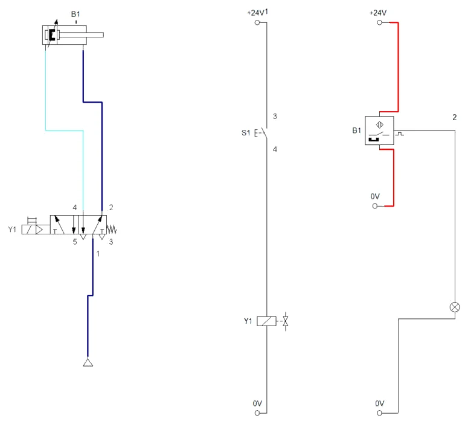
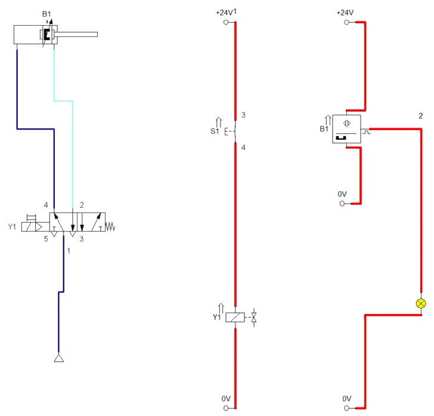
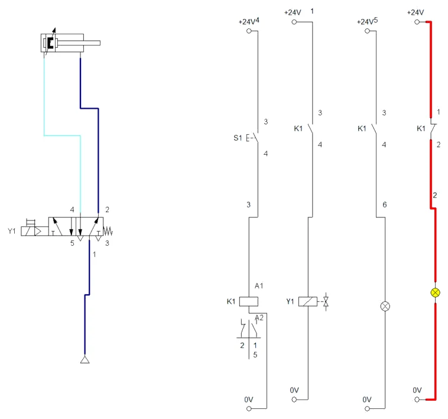
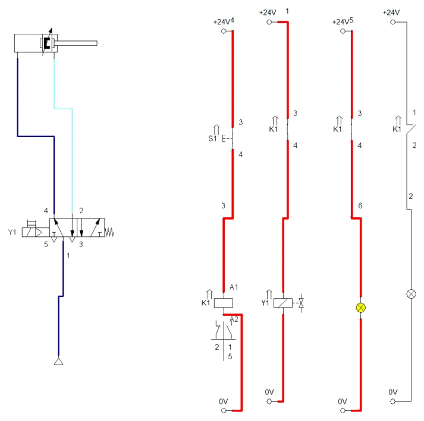
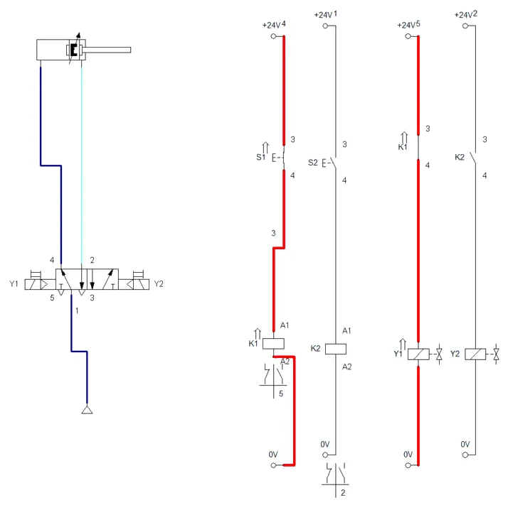
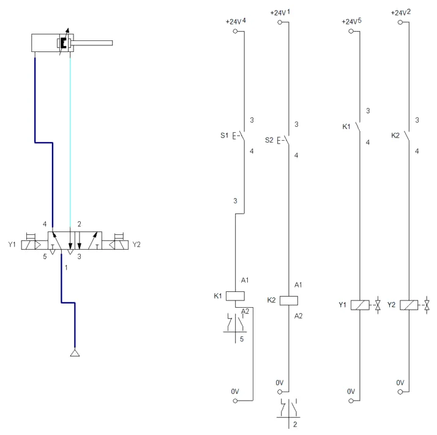
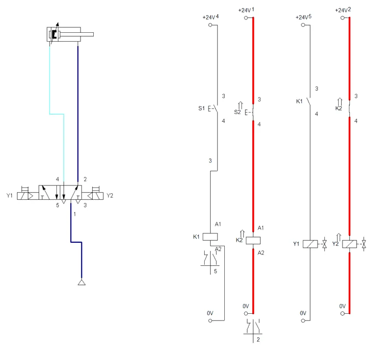
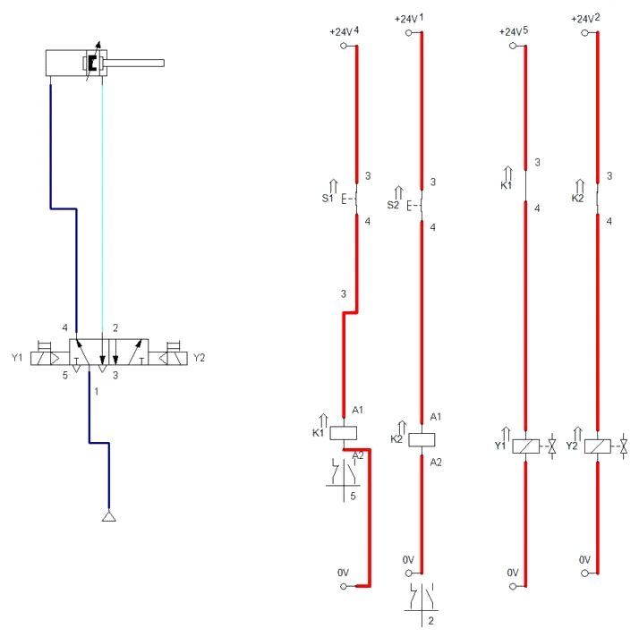
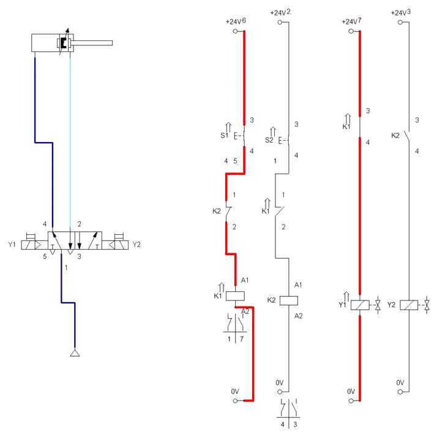
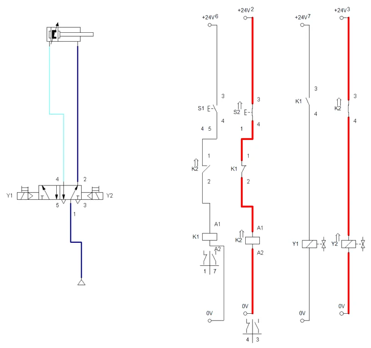

POSTUPAK · RADNI LIST V07 · FLUIDSIM
Postupak V07 · vježbe V15, V16 i V17 · 6 sati
Postupak V07 — elektropneumatika: direktno i indirektno upravljanje u FluidSIM-u
Cijeli radni list V07 korak po korak: direktno upravljanje dvoradnim cilindrom tipkalom i senzorom, indirektno upravljanje preko releja s monostabilnim razvodnikom i dopunom mirnim kontaktom, te indirektno upravljanje bistabilnim razvodnikom s dva releja. Uz svaki korak su snimke zaslona i potpuna rješenja.
- nacrtati električnu shemu u strujnim stazama uz pneumatsku shemu
- povezati svitak, relej, kontakte i senzor s pneumatskim dijelom oznakama
- ispravno spojiti trožilni senzor položaja i signalnu svjetiljku
- upravljati cilindrom indirektno preko releja i kontaktne tablice
- usporediti monostabilni i bistabilni razvodnik u simulaciji
- spremiti sheme, popuniti zapis simulacije i predati rad
O postupku
Ova stranica je postupak za radni list V07: sve što se radi na računalu, od nove sheme do predaje, redom kojim je zadano. Tekst zadatka, sheme, pitanja i rješenja isti su kao na stranicama vježbi V15 Direktno upravljanje dvoradnim cilindrom i V16 Indirektno upravljanje — monostabilni ventil i V17 Indirektno upravljanje — bistabilni ventil; ovdje su dopunjeni koracima u FluidSIM-u i rezultatima simulacije.
Rješenja su skrivena ispod svakog pitanja. Najprije riješite sami, a onda otvorite Prikaži rješenje i usporedite.
Gotove sheme (rješenja) za FluidSIM
- PIH_V15_rjesenje_v01.ct — dio A: shema V15.1 (direktno upravljanje, S1 → Y1, senzor B1 → H1)
- PIH_V16_rjesenje_v01.ct — dio B: shema V16.1 s relejem K1 i dopunom H2 na mirnom kontaktu (staza 4)
- PIH_V17_rjesenje_v01.ct — dio C: shema V17.1 (bistabilni razvodnik, releji K1 i K2)
- PIH_V17_blokiranje_v01.ct — dio C: V17 s međusobnim blokiranjem mirnim kontaktima K1 i K2
Datoteke se otvaraju u FluidSIM-P 4 (File → Open). Snimke zaslona napravljene su u FluidSIM-P 4.2 s engleskim sučeljem. Osnove rada u FluidSIM-u (nova shema, knjižnica, crtanje vodova, provjera, simulacija, dijagram put–korak) opisane su u Postupku V01, odjeljak 0.
0 · Prije početka
- File → New (Ctrl + N) otvara novu shemu; Window → Tile Vertically (Shift + F4) postavlja shemu i knjižnicu jednu uz drugu.
- Elemente povucite iz knjižnice na shemu i dvoklikom otvorite njihove dijaloge. Vod crtajte povlačenjem od priključka do priključka; povlačenjem na postojeći vod nastaje račvanje.
- Oznake (1A1, 1V1, 1S1, 0Z1 …) upisuju se elementom Text iz skupine Miscellaneous (uključite Frame Text).
- Execute → Check Superficially (F6) provjerava crtež; Start (F9), Pause (F8), Stop (F5).
- Ručno tipkalo aktivirate klikom mišem (dok držite tipku miša); Shift + klik zadrži ga pritisnutim. Ručica sa zasunom prebacuje se jednim klikom i ostaje u položaju.
- Granični ventil veže se uz cilindar oznakom: dvoklik na cilindar → kartica Actuating Labels → oznaka (npr. 1S2) i položaj na hodu (od–do u mm); ista oznaka upiše se dvoklikom na valjak graničnog ventila (Mechanical connection → Label).
- Dijagram put–korak: iz Miscellaneous povucite State Diagram i na njega povucite cilindre i ventile čije stanje želite pratiti.
Električni dio u FluidSIM-u
Električni dio crta se u istoj shemi kao pneumatski. Elementi su u knjižnici u skupini Electrical controls: Power Supply (+24V i 0V), Relays (relej, svitak ventila Valve solenoid), Switches → Manually Operated (tipkala), General Switches (radni Make switch i mirni Break switch kontakt), Proximity Switches (senzori) i Measuring instruments (signalna svjetiljka Indicator light). Svaka staza u našim shemama ima svoj simbol +24V i 0V — FluidSIM ih smatra istom sabirnicom, a vodovi se ne križaju.
Veza električnog i pneumatskog dijela ostvaruje se oznakom: dvoklik na svitak u stazi → Label Y1, i dvoklik na lijevi kraj razvodnika (elektromagnetski aktuator) → Label Y1. Isto vrijedi za relej i njegove kontakte (K1) te za senzor i oznaku na cilindru (B1). Brojeve uz staze i vodove (1, 2, … kraj +24V i na vodovima) FluidSIM dodjeljuje sam, redom kojim su elementi stavljani u shemu; oni nisu nužno jednaki brojevima staza iz zadatka.
Dio A · V15 Direktno upravljanje dvoradnim cilindrom
Zadatak
Iz lijevka s plastičnim granulatom materijal se dozira u miješalicu. Na dnu lijevka je zaklopka koju otvara dvoradni cilindar 1A1 (Ø40/16 mm, hod 80 mm) preko poluge. Rukovatelj drži tipkalo S1 dok ne ispusti potrebnu količinu, a zatim ga otpusti i zaklopka se zatvori. Na pultu svijetli signalna svjetiljka H1 dok je zaklopka potpuno otvorena; položaj javlja magnetski (reed) senzor B1 na cilindru u položaju izvučene klipnjače.
Cilindrom upravlja elektromagnetski razvodnik 1V1 5/2, monostabilan: svitak Y1 i povratna opruga. Upravljanje je direktno: kontakt tipkala S1 nalazi se u istoj strujnoj stazi sa svitkom Y1 i izravno ga uključuje.
Podaci: mreža 6 bar; napajanje 24 V DC; svitak Y1 snage 3 W; kabel od pulta do ventila dug 15 m, dvožilni, presjeka 0,5 mm²; za otvaranje zaklopke pod opterećenjem granulata potrebna je sila od 400 N na klipnjači.
Sigurnost pri radu
Pažnja
Električni vodiči spajaju se i odspajaju samo kad je napajanje isključeno, a pneumatski vodovi samo bez tlaka. Iako je 24 V DC vrlo niski napon, kratki spoj +24 V i 0 V može rastaliti tanki vodič i oštetiti napajanje. Prije uključenja napajanja provjerite multimetrom da između +24 V i 0 V nema kratkog spoja (otpor mora biti velik). Monostabilni ventil pri nestanku napona odmah vraća cilindar: ruke ne smiju biti u zoni poluge zaklopke ni kad je tipkalo otpušteno.
Shema
Električna shema crta se u strujnim stazama: gornja vodoravna crta je +24 V, donja 0 V, a svaka okomita staza nosi jedan put struje. Staze se numeriraju slijeva (1, 2, …). Kontakti se crtaju u neaktiviranom stanju, bez struje i bez pritiska. Isti element nosi istu oznaku u pneumatskoj i električnoj shemi: Y1 je istodobno svitak u stazi 1 i aktuator na razvodniku, B1 je senzor na cilindru i kontakt u stazi 2. Oznake slijede uobičajeni sustav: S za tipkala i sklopke, B za senzore i granične sklopke, K za releje, Y za svitke ventila, H za signalne svjetiljke. U ovoj vježbi releja K1 još nema — on se u vježbi V16 umeće između tipkala i svitka.
Vježba se radi u FluidSIM-u
Koraci postupka vježbe koji se odnose na spajanje na didaktičkoj ploči i mjerenje štopericom ili manometrom izvode se u simulaciji. Gdje simulacija ne može pokazati pojavu iz pokusa, to je napisano uz korak.
A1 · Shema V15.1 u FluidSIM-u
- Nova shema (File → New). Pneumatski dio: dvoradni cilindar, 5/2-way solenoid valve (monostabilni, s oprugom) i izvor zraka. Vodovi: 1 → izvor, 4 → strana klipa, 2 → strana klipnjače (u mirnom položaju 1→2, pa je klipnjača uvučena).
- Cilindar (dvoklik): najprije Actuating Labels — oznaka B1 na 78–80 mm (kraj hoda), zatim Parameters: hod 80 mm, klip 40 mm, klipnjača 16 mm. Lijevi kraj razvodnika (svitak) → Label Y1.
- Staza 1: +24V → tipkalo Pushbutton (make) S1 → Valve solenoid Y1 → 0V.
- Staza 2: Magnetic proximity switch B1 i Indicator light H1. Senzor je u FluidSIM-u trožilni: gornji priključak +24V (smeđi vodič), donji 0V (plavi), a desni priključak sa znakom impulsa je izlaz (crni) — on vodi na H1, a H1 na 0V.
- F6 → No superficial errors detected, spremite shemu.
Pazi: senzor nije dvožilna sklopka
Spoji li se svjetiljka u niz s gornjim i donjim priključkom senzora (kao kod dvožilnog reed-kontakta), kroz nju teče struja napajanja senzora i H1 svijetli stalno, bez obzira na položaj klipa. Tako je ispalo i u našem prvom pokušaju. Ispravno: gornji i donji priključak na +24V i 0V, izlaz na H1.
A2 · Simulacija: držanje i otpuštanje S1
- Start (F9). U mirovanju: Y1 bez struje, klipnjača uvučena, senzor B1 napajan (crveni vodovi), ali izlaz mu je otvoren i H1 ne svijetli (Slika A2.1).
- Pritisnite i držite S1 (držite tipku miša na tipkalu). Staza 1 provede, Y1 prebaci razvodnik (1→4), klipnjača se izvuče, a na kraju hoda B1 uključi H1 (Slika A2.2).
- Otpustite S1: Y1 ostaje bez struje, opruga vraća razvodnik i klipnjača se odmah uvlači; H1 se ugasi čim klip napusti područje senzora.
- Pokus iz pitanja 1: otpustite S1 usred hoda — klipnjača se odmah vraća.


A3 · Pitanja i zadaci
1. Ispunite tablicu stanja: S1 (otpušten / pritisnut), Y1, položaj razvodnika, položaj klipnjače, B1, H1. Opišite što se događa ako se S1 otpusti prije nego što klipnjača stigne do kraja hoda.
Prikaži rješenje
| S1 | Y1 | Razvodnik | Klipnjača | B1 | H1 |
|---|---|---|---|---|---|
| otpušten | bez struje | mirni položaj (opruga), 1→2 | uvučena | otvoren | ne svijetli |
| pritisnut | pod naponom | prebačen, 1→4 | izvlači se, zatim izvučena | zatvoren na kraju hoda | svijetli na kraju hoda |
Ako se S1 otpusti usred hoda, Y1 ostane bez struje, opruga vrati razvodnik i klipnjača se odmah počne vraćati. Monostabilni ventil nema memoriju: cilindar se giba samo dok traje signal.
U FluidSIM-u
U simulaciji (Slike A2.1 i A2.2) tablica se potvrđuje redak po redak: H1 svijetli tek kad klip stigne u područje senzora (78–80 mm), a ne čim se pritisne S1.
2. Izračunajte struju i otpor svitka Y1 snage 3 W pri 24 V DC.
Prikaži rješenje
I = P / U = 3 W / 24 V = 0,125 A = 125 mA
R = U / I = 24 V / 0,125 A = 192 Ω
Tu struju nosi kontakt tipkala S1 pri svakom uključenju i isključenju. Za tipkalo s kontaktima nazivne struje od nekoliko ampera to nije problem, ali za mali senzor ili izlaz s malom nosivošću mogao bi biti.
3. Kabel od pulta do ventila dug je 15 m, dvožilni, presjeka 0,5 mm², bakar (ρ = 0,0178 Ω·mm²/m). Izračunajte otpor kabela, pad napona i napon na svitku. Je li svitak unutar dopuštenog odstupanja od ±10 %?
Prikaži rješenje
Struja teče tamo i natrag, pa je duljina vodiča 2 · 15 = 30 m.
Rk = ρ · l / A = 0,0178 · 30 / 0,5 ≈ 1,07 Ω
ΔU = I · Rk = 0,125 · 1,07 ≈ 0,13 V (≈ 0,6 %)
Napon na svitku je oko 23,87 V, daleko iznad donje granice od 21,6 V (24 V − 10 %). Pad napona postaje važan tek kad jednim vodom ide struja više svitaka ili kad je kabel mnogo dulji.
4. Izračunajte stvarnu silu izvlačenja i uvlačenja cilindra Ø40/16 mm pri 6 bar (η = 0,9). Može li cilindar otvoriti zaklopku kojoj treba 400 N? Pri kojem se najmanjem tlaku zaklopka još otvara?
Prikaži rješenje
Izvlačenje: A = π · 40² / 4 = 1256,6 mm² → F = 0,9 · 0,6 · 1256,6 ≈ 679 N.
Uvlačenje: Ap = 1256,6 − π · 16² / 4 = 1055,6 mm² → F ≈ 570 N.
Sila izvlačenja 679 N veća je od 400 N (rezerva oko 1,7). Najmanji tlak: p = 400 / (0,9 · 1256,6) ≈ 0,354 N/mm² ≈ 3,5 bar.
5. Opišite što se dogodilo u koraku 7 postupka (isključenje napajanja pri izvučenoj klipnjači). Je li takvo ponašanje za zaklopku lijevka poželjno? Kada bi bilo opasno?
Prikaži rješenje
Svitak Y1 ostao je bez napona, opruga je vratila razvodnik i klipnjača se uvukla — zaklopka se zatvorila. Za lijevak je to poželjno: pri nestanku napona prestaje doziranje, a materijal ne istječe nekontrolirano. Opasno bi bilo kad bi povratno gibanje moglo nekoga prignječiti ili kad bi cilindar držao teret koji se pri nestanku napona ne smije pomaknuti. Tada se bira razvodnik 5/3 sa zatvorenim srednjim položajem, bistabilni razvodnik ili se dodaje nepovratni ventil s deblokadom.
U FluidSIM-u
U FluidSIM-u nestanak napona izgleda isto kao otpuštanje S1: Y1 ostaje bez struje i opruga vraća razvodnik.
6. Svitak ventila je induktivno trošilo. Što se događa na kontaktu S1 u trenutku isključenja i čemu služi zaštitni sklop u utikaču ventila?
Prikaži rješenje
Kad se struja kroz svitak naglo prekine, magnetsko polje nestaje i u svitku se inducira napon suprotan promjeni, višestruko veći od 24 V. Taj napon stvara iskru na kontaktu (trošenje kontakta) i može oštetiti elektroniku (senzor, izlaz PLC-a). Zaštitni sklop — dioda slobodnog hoda, varistor ili njihova kombinacija — daje struji svitka put pri isključenju i ograničava prenapon. Posljedica diode je nešto sporije otpuštanje kotve ventila. Svjetleća dioda u utikaču samo pokazuje da je svitak pod naponom.
7. Dopuna sheme: zaklopka treba ostati otvorena i nakon otpuštanja tipkala. Nacrtajte pneumatsku i električnu shemu direktnog upravljanja s bistabilnim razvodnikom (Y1, Y2) i dva tipkala (S1 otvori, S2 zatvori).
Prikaži rješenje
Pneumatska shema: razvodnik 5/2 sa svitkom Y1 lijevo i svitkom Y2 desno, bez opruge. Električna shema: staza 1 +24 V → S1 → Y1 → 0 V; staza 2 +24 V → S2 → Y2 → 0 V; staza 3 ostaje B1 → H1. Kratak pritisak na S1 prebaci razvodnik i on ostaje prebačen i kad Y1 više nije pod naponom; S2 ga vraća. Pritisnu li se S1 i S2 istodobno, razvodnik ostaje u zatečenom položaju. Pri nestanku napona zaklopka ostaje u zatečenom položaju — treba ocijeniti je li to za lijevak prihvatljivo.
8. Pri pritisku na S1 svijetli dioda na utikaču ventila, ali klipnjača se ne giba. Navedite barem četiri moguća uzroka i redoslijed provjere.
Prikaži rješenje
Dioda pokazuje da električni dio do utikača radi, pa se traži u pneumatici ili u samom ventilu: 1) nema zraka ili je tlak premalen (manometar, zaporni ventil); 2) zamijenjeni vodovi 2 i 4, pa je cilindar već izvučen „naopako“; 3) ventil ima ručnu pomoćnu tipku zakočenu u nekom položaju ili je zapeo; 4) prekinut svitak ili loš kontakt u utikaču (dioda svijetli, a svitak ne vuče); 5) mehanička blokada zaklopke. Redoslijed: tlak → cijevi → ručna tipka ventila → napon i struja svitka → mehanika.
Dio B · V16 Indirektno upravljanje — monostabilni ventil
Zadatak
Na stolu stupne bušilice obradak (čelična pločica) steže se pneumatskom stegom. Dvoradni cilindar 1A1 (Ø50/20 mm, hod 25 mm) pritišće obradak preko gumirane papuče na stol. Stega steže dok rukovatelj drži tipkalo S1 na pultu uz bušilicu, a otpušta čim se tipkalo otpusti. Tako rukovatelj ne može otići od stroja dok je obradak stegnut, a nakon završetka ne mora ništa isključivati.
Razvodnik 1V1 je elektromagnetski 5/2, monostabilan, sa svitkom Y1 (3 W, 24 V DC). Razvodnik je ugrađen u ormarić na stupu bušilice, a pult je udaljen 25 m signalnim kabelom presjeka 0,25 mm². Zato je upravljanje indirektno: S1 uključuje samo svitak releja K1 (0,5 W), a radni kontakt releja u stazi 2 uključuje svitak Y1. Drugi radni kontakt istog releja u stazi 3 pali svjetiljku H1 „stega uključena“.
Pri bušenju svrdlom Ø10 mm tangencijalna sila na obratku je, prema procjeni, do 120 N. Faktor trenja između čelika i stola, odnosno između čelika i papuče, uzmite 0,15, a faktor sigurnosti 1,5. Mreža ima 6 bar.
Sigurnost pri radu
Pažnja
Stega steže silom od oko 1000 N — prste nikad ne stavljajte ispod papuče, ni kad je sklop „isključen“: pritisak na ručnu pomoćnu tipku ventila ili zalijepljeni kontakt releja pokreće cilindar bez tipkala. Električne spojeve mijenjajte samo bez napona, pneumatske samo bez tlaka. Na relejnom modulu ne spajajte vodiče na stezaljke čiju namjenu ne znate — provjerite oznake kontakata (npr. 13–14 radni, 11–12 mirni) i shemu modula.
Shema
Relej je elektromagnetska sklopka: kad kroz njegov svitak teče struja, kotva privuče kontakte. Radni (NO) kontakt tada se zatvori, a mirni (NC) otvori. Kontakti releja crtaju se u staze gdje djeluju, a ne uz svitak; veza između svitka i kontakata vidi se samo iz iste oznake (K1) i iz kontaktne tablice ispod svitka.
Vježba se radi u FluidSIM-u
Koraci postupka vježbe koji se odnose na spajanje na didaktičkoj ploči i mjerenje štopericom ili manometrom izvode se u simulaciji. Gdje simulacija ne može pokazati pojavu iz pokusa, to je napisano uz korak.
B1 · Shema V16.1 s relejem K1 u FluidSIM-u
- Shemu V15 otvorite i cijelu kopirajte u novu shemu (Edit → Select All, kopiraj, File → New, zalijepi), pa je spremite pod novim imenom. Senzor B1, njegov 0V i svjetiljku obrišite (brisanjem elementa nestanu i njegovi vodovi).
- Cilindar (dvoklik): najprije Actuating Labels — obrišite oznaku B1 i postavite Begin i End na 0, tek onda Parameters: hod 25 mm, klip 50 mm, klipnjača 20 mm.
- Staza 1: +24V → S1 → svitak releja (Relays → Relay, priključci A1–A2) → 0V. Dvoklik na relej → Label K1.
- Staza 2: +24V → radni kontakt (General Switches → Make switch) → svitak Valve solenoid Y1 → 0V. Staza 3: +24V → drugi radni kontakt → svjetiljka H1 → 0V. Staza 4 (dopuna iz pitanja 7): +24V → mirni kontakt (Break switch) → svjetiljka H2 → 0V. Svim trima kontaktima dvoklikom upišite oznaku K1.
- Ispod svitka K1 FluidSIM sam iscrta kontaktnu tablicu: lijevo staze s mirnim, desno staze s radnim kontaktima. F6 → No superficial errors detected.
Pazi: oznake prije hoda
Ako se hod cilindra smanji (80 → 25 mm) dok na cilindru još stoji oznaka B1 na 78–80 mm, FluidSIM u prozoru Configure Cylinder naizmjence javlja „minimal 78” i „maximal 25” i prozor se više ne da zatvoriti — pomaže samo gašenje programa. Zato se oznake uvijek mijenjaju prije hoda.
Brojevi staza u FluidSIM-u
FluidSIM numerira staze sam, redom kojim su elementi stavljeni u shemu, a ne slijeva nadesno. U našoj datoteci staze iz zadatka (1 S1–K1, 2 Y1, 3 H1, 4 H2) imaju FluidSIM-ove brojeve 4, 1, 5 i 2, pa tablica ispod K1 glasi „2 | 1 5”: mirni kontakt u FluidSIM-ovoj stazi 2 (H2), radni u 1 (Y1) i 5 (H1). Na papiru se staze numeriraju slijeva.
B2 · Simulacija: stezanje i otpuštanje
- Start (F9). U mirovanju: K1 bez struje, mirni kontakt K1 zatvoren i H2 svijetli („stega otpuštena”), klipnjača uvučena (Slika B2.1).
- Pritisnite i držite S1: K1 privuče (strelica uz oznaku), oba radna kontakta se zatvore, Y1 prebaci razvodnik i klipnjača se izvuče, H1 svijetli, a mirni kontakt se otvori i H2 se ugasi (Slika B2.2).
- Otpustite S1: K1 otpusti, Y1 ostaje bez struje, opruga vraća razvodnik, H1 se gasi, H2 se pali.


B3 · Pitanja i zadaci
1. Opišite redom što se događa u sklopu od pritiska na S1 do stezanja obratka, a zatim od otpuštanja S1 do otpuštanja stege.
Prikaži rješenje
Pritisak na S1 zatvara stazu 1 i svitak K1 dobiva napon. Relej privuče kotvu i zatvori radne kontakte u stazama 2 i 3. Svitak Y1 dobiva napon, razvodnik se prebaci (1→4), cilindar se izvlači i steže; H1 svijetli. Otpuštanjem S1 K1 ostaje bez napona, kontakti se otvore, Y1 ostaje bez napona, opruga vraća razvodnik (1→2) i cilindar se uvlači; H1 se gasi. Kašnjenje releja (reda veličine 10 ms) dodaje se kašnjenju ventila.
U FluidSIM-u
U simulaciji (Slike B2.1 i B2.2) redoslijed se vidi po bojama: najprije provede staza 1 (S1, K1), zatim staze s radnim kontaktima (Y1, H1); otpuštanjem S1 sve se vraća, a H2 se pali.
2. Što znači zapis „2, 3“ ispod svitka K1? Nacrtajte potpunu kontaktnu tablicu releja K1 s dva radna i jednim mirnim kontaktom, ako se mirni kontakt koristi u stazi 4.
Prikaži rješenje
Zapis govori da se radni kontakti releja K1 nalaze u strujnim stazama 2 i 3. Potpuna tablica ima dva stupca: lijevo radni (NO) kontakti, desno mirni (NC) kontakti.
| Radni (NO) | Mirni (NC) |
|---|---|
| 13–14 u stazi 2 | 11–12 u stazi 4 |
| 23–24 u stazi 3 | — |
Tablica omogućuje da se u velikoj shemi odmah pronađe gdje djeluje svaki kontakt releja.
U FluidSIM-u
U FluidSIM-u se kontaktna tablica crta sama ispod svitka; brojevi u njoj su FluidSIM-ovi brojevi staza (okvir „Brojevi staza u FluidSIM-u” u odjeljku B1).
3. Izračunajte struju svitka K1 (0,5 W) i svitka Y1 (3 W) pri 24 V. Koju struju nosi kontakt tipkala S1 u ovom sklopu, a koju bi nosio pri direktnom upravljanju (V15)?
Prikaži rješenje
IK1 = 0,5 / 24 ≈ 0,021 A = 21 mA; IY1 = 3 / 24 = 0,125 A
Kontakt S1 nosi samo 21 mA, dakle šest puta manje nego pri direktnom upravljanju (125 mA). Struju svitka Y1 nosi kontakt releja, koji je za to predviđen (tipično nekoliko ampera). Tipkalo, senzor ili izlaz upravljačkog uređaja tako se rasterećuju, a induktivni prenapon svitka Y1 ne dolazi do tipkala.
4. Signalni kabel od pulta ima duljinu 25 m i presjek 0,25 mm² (bakar, ρ = 0,0178 Ω·mm²/m). Izračunajte pad napona pri indirektnom upravljanju i usporedite ga s padom koji bi nastao da kabelom teče struja svitka Y1.
Prikaži rješenje
Rk = 0,0178 · 2 · 25 / 0,25 = 3,56 Ω
Indirektno: ΔU = 0,021 · 3,56 ≈ 0,07 V. Direktno: ΔU = 0,125 · 3,56 ≈ 0,45 V. U oba slučaja pad je malen, ali je pri indirektnom upravljanju šest puta manji, a na dugim kabelima s više svitaka ta razlika postaje presudna. Tanji signalni kabel jeftiniji je i lakše se polaže.
5. Izračunajte silu stezanja koja je potrebna da se obradak ne zakrene pri bušenju (tangencijalna sila 120 N, dvije tarne površine, μ = 0,15, sigurnost 1,5). Je li cilindar Ø50 mm pri 6 bar (η = 0,9) dovoljan i koji je najmanji tlak?
Prikaži rješenje
Trenje djeluje na donjoj i gornjoj plohi obratka, pa je sila trenja 2 · μ · Fst. Uvjet: 2 · μ · Fst ≥ k · Ft.
Fst = 1,5 · 120 / (2 · 0,15) = 600 N
Cilindar daje F = 0,9 · 0,6 · 1963,5 ≈ 1060 N, pa je dovoljan. Najmanji tlak: p = 600 / (0,9 · 1963,5) ≈ 0,34 N/mm² ≈ 3,4 bar. Rezerva postoji, ali rukovatelja treba upozoriti da stega ne drži sigurno ako tlak u mreži padne ispod oko 3,5 bar.
6. Opišite rezultat pokusa u koraku 7 (odspojen Y1). Što taj pokus pokazuje o neovisnosti upravljačkog i glavnog kruga?
Prikaži rješenje
K1 i dalje privlači i H1 svijetli, ali cilindar se ne giba. Upravljački krug (staza 1) i krugovi trošila (staze 2 i 3) su odvojeni: kvar u jednom trošilu ne sprječava rad releja ni drugih trošila. Za dijagnostiku to znači da svjetiljka H1 potvrđuje samo da je relej privukao, a ne da je stega stegnula — za to je potreban senzor na cilindru.
7. Dopuna sheme: dodajte stazu 4 sa zelenom svjetiljkom H2 „stega otpuštena“, koja svijetli kad K1 nije privučen. Nacrtajte stazu i dopunite kontaktnu tablicu.
Prikaži rješenje
Staza 4: +24 V → mirni kontakt K1 (11–12) → H2 → 0 V. Mirni kontakt crta se zatvoren (neaktivirano stanje). Dok K1 ne privuče, H2 svijetli; kad S1 uključi K1, mirni kontakt se otvori i H2 se gasi, a H1 pali. U kontaktnu tablicu ispod K1 u stupac mirnih kontakata upisuje se 4. Na svakom releju kontakti se broje: prva znamenka je redni broj kontakta, druga 1–2 za mirni, 3–4 za radni.
U FluidSIM-u
Staza 4 s H2 na mirnom kontaktu K1 već je u našoj shemi: u mirovanju H2 svijetli (Slika B2.1), a pri stezanju se gasi (Slika B2.2).
8. Navedite četiri razloga zbog kojih se u elektropneumatici češće koristi indirektno nego direktno upravljanje.
Prikaži rješenje
- tipkala, senzori i izlazi upravljačkih uređaja nose samo malu struju svitka releja;
- jedan relej ima više kontakata, pa jedan signal može istodobno upravljati s više trošila i signalizacijom;
- relejima se ostvaruju logičke funkcije (I, ILI, NE), samodržanje i vremenske funkcije;
- upravljački krug može raditi na drugom naponu od glavnog kruga (npr. 24 V DC upravljanje, 230 V AC trošilo), jer su svitak i kontakti releja galvanski odvojeni.
Dio C · V17 Indirektno upravljanje — bistabilni ventil
Zadatak
U usisnom kanalu za odsis prašine iznad brusilice ugrađena je zakretna zaklopka. Kad brusilica radi, zaklopka mora biti otvorena, a kad ne radi, zatvorena, da ventilator ne troši energiju na prazan kanal. Zaklopku zakreće za 90° dvoradni cilindar 1A1 (Ø40/16 mm, hod 100 mm) preko poluge duljine 70 mm na vratilu zaklopke. Cilindar je postavljen tako da je u srednjem položaju zaklopke okomit na polugu.
Rukovatelj otvara zaklopku kratkim pritiskom na S1, a zatvara kratkim pritiskom na S2. Zaklopka mora ostati u zadanom položaju i kad je tipkalo otpušteno i kad nestane napona upravljanja. Zato se koristi bistabilni elektromagnetski razvodnik 5/2 sa svicima Y1 (otvori) i Y2 (zatvori), bez opruge. Upravljanje je indirektno: S1 uključuje relej K1, S2 relej K2, a njihovi radni kontakti uključuju svitke.
Za zakretanje zaklopke (trenje u ležajevima i tlak zraka na krilo) potreban je moment od najviše 20 Nm. Mreža ima 6 bar, svici imaju snagu 3 W pri 24 V DC, a brusilica radi 8 sati na dan.
Sigurnost pri radu
Pažnja
Bistabilni razvodnik pamti zadnji položaj i kad su napon i zrak isključeni. Pri otvaranju zraka cilindar odmah zauzme položaj koji je razvodnik zapamtio, bez ikakvog pritiska na tipkalo. Prije otvaranja zraka zato provjerite položaj razvodnika (pokazivač ili ručna pomoćna tipka) i maknite ruke iz zone poluge. Poluga na vratilu zaklopke je mjesto škare: nikad je ne pridržavajte rukom. Vodiče spajajte bez napona, cijevi bez tlaka.
Shema
Bistabilni razvodnik crta se u položaju u kojem se nalazi pri puštanju u rad (ovdje: zatvorena zaklopka, klipnjača uvučena). U njegovu simbolu nema opruge — to je najbrži način da se na shemi prepozna.
Vježba se radi u FluidSIM-u
Koraci postupka vježbe koji se odnose na spajanje na didaktičkoj ploči i mjerenje štopericom ili manometrom izvode se u simulaciji. Gdje simulacija ne može pokazati pojavu iz pokusa, to je napisano uz korak.
C1 · Shema V17.1 s bistabilnim razvodnikom
- Shemu V16 kopirajte u novu shemu i spremite je pod novim imenom. Razvodnik obrišite i umjesto njega iz Valves → Solenoid Operated uzmite 5/2-way solenoid impulse valve (svitak na obje strane, bez opruge). Lijevi svitak → Label Y1, desni → Y2. Vodovi: 1 → izvor, 4 → strana klipa, 2 → strana klipnjače.
- Cilindar: hod 100 mm, klip 40 mm, klipnjača 16 mm (oznake na cilindru ostaju 0).
- Staza 1: +24V → S1 → svitak releja K1 → 0V. Staza 2: +24V → S2 → svitak releja K2 → 0V.
- Staza 3: +24V → radni kontakt K1 → svitak Y1 → 0V. Staza 4: +24V → radni kontakt K2 → svitak Y2 → 0V. Svjetiljke iz V16 nisu potrebne.
- F6 → No superficial errors detected, spremite.
C2 · Simulacija: pamćenje položaja
- Start (F9): razvodnik je u položaju uvlačenja (1→2), klipnjača uvučena — kako je i nacrtan.
- Kratko pritisnite S1: K1 privuče, Y1 dobije napon, razvodnik se prebaci i klipnjača se izvlači (Slika C2.1).
- Otpustite S1: K1 i Y1 su bez struje, a razvodnik ostaje prebačen i klipnjača ostaje izvučena (Slika C2.2).
- Kratko pritisnite S2: K2 i Y2 prebace razvodnik natrag, klipnjača se uvlači (Slika C2.3) i ostaje uvučena i nakon otpuštanja.



Pokus s istodobnim signalima u FluidSIM-u
Mišem se drži samo jedno tipkalo, ali Shift + klik tipkalo zadrži pritisnutim (ponovni Shift + klik ga otpušta). Shift + klik na S1, zatim Shift + klik na S2: pod naponom su i Y1 i Y2, a razvodnik ostaje u položaju izvlačenja (Slika C2.4). Otpusti li se S1 (Shift + klik), djeluje samo Y2 i klipnjača se uvlači.

Što simulacija ne pokazuje
Nestanak napona i zraka (korak 6 postupka) u simulaciji se ne izvodi; to ostaje za stvarni sklop.
C3 · Dopuna: međusobno blokiranje K1 i K2
- Shemu s blokiranjem spremite kao posebnu datoteku. U stazu 1, između S1 i svitka K1, umetnite mirni kontakt K2 (Break switch, oznaka K2): vod S1 → K1 obrišite i spojite S1 → mirni kontakt → A1 od K1.
- U stazu 2, između S2 i K2, na isti način umetnite mirni kontakt K1. F6, spremite.
- Start, Shift + klik na S1 (K1 privuče, klipnjača se izvuče), zatim Shift + klik na S2: S2 je zatvoren, ali mirni kontakt K1 u stazi 2 je otvoren i K2 ne privlači (Slika C3.1). Kontaktne tablice ispod K1 i K2 sad imaju i mirne kontakte.
- Shift + klikom otpustite S1: K1 otpusti, njegov mirni kontakt se zatvori i tek sad K2 privuče, a Y2 vrati klipnjaču (Slika C3.2). Tko prvi pritisne, taj „pobjeđuje”.


C4 · Pitanja i zadaci
1. Ispunite tablicu za redoslijed: mirovanje → S1 kratko → S1 otpušten → S2 kratko → S2 otpušten. Stupci: K1, K2, Y1, Y2, položaj razvodnika, klipnjača.
Prikaži rješenje
| Stanje | K1 | K2 | Y1 | Y2 | Razvodnik | Klipnjača |
|---|---|---|---|---|---|---|
| mirovanje | 0 | 0 | 0 | 0 | 1→2 | uvučena |
| S1 kratko | 1 | 0 | 1 | 0 | 1→4 | izvlači se |
| S1 otpušten | 0 | 0 | 0 | 0 | 1→4 (pamti) | izvučena |
| S2 kratko | 0 | 1 | 0 | 1 | 1→2 | uvlači se |
| S2 otpušten | 0 | 0 | 0 | 0 | 1→2 (pamti) | uvučena |
Razlika prema monostabilnom ventilu (V16): položaj ostaje i kad nijedan svitak nije pod naponom.
U FluidSIM-u
U simulaciji se tablica potvrđuje redak po redak: Slika C2.1 (S1 kratko), C2.2 (S1 otpušten, razvodnik pamti 1→4) i C2.3 (S2 kratko).
2. Provjerite je li hod cilindra od 100 mm dovoljan za zakretanje zaklopke za 90° polugom od 70 mm, ako je cilindar u srednjem položaju okomit na polugu. Pomak osi cilindra zbog zakretanja se zanemaruje.
Prikaži rješenje
Kraj poluge giba se po luku od −45° do +45° oko okomitog položaja. Pomak u smjeru osi cilindra je tetiva:
s = 2 · r · sin 45° = 2 · 70 · 0,7071 ≈ 99 mm
Hod od 100 mm je dovoljan, uz rezervu od samo 1 mm. U praksi se hod bira malo veći ili se zaklopka zaustavlja graničnikom, a cilindar ostaje malo prije kraja hoda i drži zaklopku silom.
3. Izračunajte najmanji moment kojim cilindar zakreće zaklopku pri otvaranju i pri zatvaranju (6 bar, η = 0,9). Je li dovoljan za 20 Nm?
Prikaži rješenje
Sila izvlačenja ≈ 679 N, sila uvlačenja ≈ 570 N (površine 1256,6 mm² i 1055,6 mm²). Krak sile najmanji je u krajnjim položajima: r · cos 45° = 70 · 0,7071 ≈ 49,5 mm; u srednjem položaju je 70 mm.
Motv,min = 679 · 0,0495 ≈ 33,6 Nm; Mzat,min = 570 · 0,0495 ≈ 28,2 Nm
Oba su veća od 20 Nm. Najveći momenti, u srednjem položaju, su oko 47,5 Nm i 39,9 Nm. Rezerva pri zatvaranju je manja jer uvlačenje ima manju površinu.
4. Usporedite dnevnu električnu energiju svitka: (a) monostabilni ventil čiji je svitak (3 W) pod naponom cijelih 8 sati dok je zaklopka otvorena; (b) bistabilni ventil kojem se svitak uključuje 20 puta dnevno po 0,1 s.
Prikaži rješenje
(a) E = P · t = 3 W · 8 h = 24 Wh.
(b) E = 3 W · 20 · 0,1 s = 6 J ≈ 0,0017 Wh.
Za jedan ventil ušteda je mala u novcu, ali bistabilni svitak se ne grije, a na postrojenju sa stotinama ventila i trajnim radom razlika je vidljiva. Važniji je sigurnosni kriterij: kako se sustav mora ponašati pri nestanku napona (pitanje 7).
5. Opišite rezultat pokusa s istodobnim signalima (korak 5). Zašto razvodnik ne reagira na S2 dok je S1 pritisnut i što se dogodi kad se S1 otpusti?
Prikaži rješenje
Dok je S1 pritisnut, Y1 je pod naponom i drži razvodnik u položaju 1→4. Kad se pritisne i S2, pod naponom su oba svitka; njihove sile na klip razvodnika se poništavaju i razvodnik ostaje u zatečenom položaju (izvlačenje). Kad se S1 otpusti, djeluje samo Y2 i razvodnik se prebaci — zaklopka se zatvara. Električni ekvivalent je blokirajući signal iz pneumatike: dva suprotna signala na istom razvodniku.
U FluidSIM-u
U simulaciji (Slika C2.4, S1 i S2 zadržani Shift + klikom) pod naponom su oba svitka i razvodnik ostaje u položaju 1→4; nakon otpuštanja S1 klipnjača se uvlači.
6. Dopuna sheme: izvedite međusobno blokiranje — K1 ne smije privući dok je privučen K2 i obrnuto. Ucrtajte potrebne kontakte u staze 1 i 2 i dopunite kontaktne tablice.
Prikaži rješenje
U stazu 1, u niz sa S1 i ispred svitka K1, ugrađuje se mirni kontakt K2; u stazu 2, u niz sa S2, mirni kontakt K1. Kad je K1 privučen, njegov mirni kontakt u stazi 2 otvori se i K2 ne može privući; vrijedi i obrnuto. Kontaktne tablice: K1 — radni u stazi 3, mirni u stazi 2; K2 — radni u stazi 4, mirni u stazi 1. Pokus: tko prvi pritisne, taj „pobjeđuje“, a drugi signal nema učinka dok se prvi ne otpusti. Blokiranje sprječava da oba svitka budu istodobno pod naponom.
U FluidSIM-u
Gotova shema s blokiranjem je u datoteci PIH_V17_blokiranje_v01.ct (Slike C3.1 i C3.2).
7. Što se dogodilo u pokusu s nestankom napona i zraka (korak 6)? Za koju je primjenu takvo ponašanje dobro, a za koju opasno?
Prikaži rješenje
Nakon isključenja napona klipnjača je ostala izvučena. Nakon isključenja zraka cilindar više nije pod silom, pa se zaklopka može pomaknuti pod vlastitom težinom ili strujom zraka, ali razvodnik je ostao u položaju 1→4. Kad se zrak ponovno otvori, cilindar se odmah izvuče. Za zaklopku odsisa to je dobro — nestanak napona ne prekida odsis. Opasno je ondje gdje gibanje pri ponovnom otvaranju zraka može ozlijediti čovjeka ili gdje se sustav nakon kvara mora vratiti u siguran položaj: tamo se bira monostabilni ventil (povrat oprugom) ili ventil za postupno puštanje tlaka s nadzorom osnovnog položaja.
U FluidSIM-u
U simulaciji se vidi samo prvi dio odgovora: nakon otpuštanja S1 klipnjača ostaje izvučena iako nijedan svitak nije pod naponom (Slika C2.2).
8. Najkraći impuls koji pouzdano prebacuje ventil je, prema podacima proizvođača, 20 ms, a relej privuče za 10 ms. Koliko najmanje mora trajati pritisak na S1? Zašto se u praksi ipak preporučuje dulji impuls?
Prikaži rješenje
Signal mora proći relej i zatim djelovati na svitak: t ≥ 10 + 20 = 30 ms. Ljudski pritisak na tipkalo traje tipično 100–300 ms, pa je uvjet ispunjen. Pri upravljanju iz PLC-a ili senzorom preporučuje se impuls od barem 50–100 ms, zbog rasipanja vremena prebacivanja, pada napona i starenja ventila. Prekratak impuls je čest uzrok povremenih kvarova koje je teško otkriti.
Zapis simulacije
Tablica Zapis: simulacija iz radnog lista, popunjena prema simulaciji u FluidSIM-P 4.2 (rješenje).
| Veličina | Očekivano (proračun / zadatak) | FluidSIM | Komentar |
|---|---|---|---|
| Direktno: S1 držan (A) | klipnjača izvučena, H1 na kraju hoda | isto (Slika A2.2) | B1 na 78–80 mm |
| Direktno: S1 otpušten (A) | klipnjača se odmah vraća | isto | monostabilni ventil nema memoriju |
| Indirektno: mirovanje (B) | H2 svijetli, stega otpuštena | isto (Slika B2.1) | mirni kontakt K1 |
| Indirektno: S1 držan (B) | K1 privučen, Y1 i H1 pod naponom, H2 ugašena | isto (Slika B2.2) | — |
| Bistabilni: S1 kratko pa otpušten (C) | klipnjača izvučena i ostaje | isto (Slike C2.1, C2.2) | razvodnik pamti položaj |
| Bistabilni: S2 kratko (C) | klipnjača se uvlači i ostaje | isto (Slika C2.3) | — |
| Istodobno S1 i S2 (C) | razvodnik ostaje u zatečenom položaju | isto (Slika C2.4) | Shift + klik |
| Blokiranje K1/K2 (C) | drugi relej ne privlači | isto (Slike C3.1, C3.2) | mirni kontakti u stazama 1 i 2 |
| Tlak / napon | 6 bar, 24 V DC | 0Z1 = 0,6 MPa, 24 V | — |
Spremanje i predaja
- File → Save As. U polje Naziv datoteke upišite
PIH_2026-2027_Prezime_Ime_V07.ct(bez kvačica) i kliknite Spremi. Kasnije spremanje: File → Save (Ctrl + S). - Snimka: za vrijeme simulacije (nakon Pause) snimite zaslon sa shemom i dijagramom put–korak (u sustavu Windows: Windows + Shift + S), ili shemu spremite naredbom File → TIFF Export.
- Ispunite radni list (proračuni i zapis simulacije).
- Predajte u sustav za e-učenje: shemu
.ct, snimku zaslona simulacije i ispunjen radni list. Sve datoteke imenujtePIH_2026-2027_Prezime_Ime_….
Primjena na vlastiti zadatak P##
Projekt SL-3, vaša varijanta P## (ulazni podaci u „Projektni zadaci P01–P21”): nacrtajte električnu shemu za start ciklusa SL-3 tipkalom preko releja K1 i signalnom svjetiljkom „ciklus u tijeku”, u istoj datoteci s pneumatskom shemom. Opis naprave: Projektni zadatak: naprava SL-3 za savijanje lima.
Kod pitanja: susjed → radni list i ova stranica → nastavnik. AI smijete koristiti uz navođenje što je i kako napravljeno.
Za nastavnika
Dio A · vježba V15
Otvori upute za nastavnika
Priprema
Ovo je prva elektropneumatska vježba, pa na početku treba kratko ponoviti pravila crtanja u strujnim stazama i boje vodiča. Provjerite napajanja (zaštita od kratkog spoja mora biti ispravna), ispravnost utikača ventila i vrstu senzora (dvožilni ili trožilni) na svakom mjestu. Pripremite multimetre s mjernim vrhovima za mjerenje napona na utikaču.
Tijek sata
- 0–15 min: strujne staze, oznake S, K, Y, B, H, čitanje sheme V15.1.
- 15–40 min: spajanje pneumatskog i električnog dijela, provjera kratkog spoja multimetrom, puštanje u rad.
- 40–55 min: pokusi iz koraka 5–8 (napon svitka, nestanak napona, područje senzora).
- 55–75 min: pitanja 1–6, računski zadaci.
- 75–87 min: dopuna s bistabilnim ventilom (pitanje 7), po mogućnosti izvedba.
- 87–90 min: rastavljanje, osvrt.
Očekivani rezultati
Sklop radi: dok je S1 pritisnut, klipnjača je izvučena, a H1 svijetli na kraju hoda. Izmjereni napon na svitku razlikuje se od napona napajanja za manje od 0,5 V. Polaznik zna objasniti ulogu opruge i ponašanje pri nestanku napona. Računski: 125 mA, 192 Ω, pad napona oko 0,13 V, sila 679 N, najmanji tlak oko 3,5 bar.
Česte pogreške
- svitak spojen između dviju točaka +24 V, pa ne dobiva napon — traži se napon na obje stezaljke svitka prema 0 V;
- trožilni senzor spojen kao dvožilni (izlaz na +24 V), pa senzor ne radi ili se ošteti;
- zamijenjeni pneumatski vodovi 2 i 4;
- u proračunu pada napona uzeta samo jedna duljina kabela, a ne povratni vodič.
Vrednovanje
| Kriterij | Bodovi |
|---|---|
| Ispravno spojen pneumatski i električni dio, sigurni postupci | 6 |
| Tablica stanja i objašnjenje monostabilnog ventila | 3 |
| Računski zadaci 2–4 | 5 |
| Objašnjenje zaštitnog sklopa i ponašanja pri nestanku napona | 3 |
| Dopuna sheme s bistabilnim ventilom | 2 |
| Dijagnostika (pitanje 8) | 1 |
| Ukupno | 20 |
Dio B · vježba V16
Otvori upute za nastavnika
Priprema
Provjerite relejne module: oznake stezaljki (A1–A2 svitak, 13–14 i 23–24 radni, 11–12 mirni) moraju biti čitljive. Pripremite po jedan kolut dvožilnog kabela duljine 20–25 m za pokazni pokus pada napona. Polaznici moraju znati spojiti multimetar za mjerenje struje (u nizu) — to kratko ponovite, jer je pogrešno spojeni ampermetar čest uzrok pregorjelog osigurača.
Tijek sata
- 0–15 min: građa releja, radni i mirni kontakt, kontaktna tablica, shema V16.1.
- 15–40 min: spajanje staza 1–3 i pneumatskog dijela, puštanje u rad.
- 40–55 min: mjerenje struja, pokus s odspojenim Y1.
- 55–75 min: računski zadaci 3–5, pitanja 1, 2, 6.
- 75–87 min: dopuna stazom 4 i mirnim kontaktom (pitanje 7).
- 87–90 min: rastavljanje, osvrt.
Očekivani rezultati
Stega steže samo dok je S1 pritisnut, H1 svijetli istodobno. Izmjerene struje: oko 20 mA u stazi 1 i oko 125 mA u stazi 2. Nakon dopune H2 svijetli u mirovanju i gasi se pri stezanju. Računski: 21 mA i 125 mA, pad napona 0,07 V i 0,45 V, potrebna sila 600 N, najmanji tlak oko 3,4 bar.
Česte pogreške
- svitak releja spojen na stezaljke kontakta, pa relej ne privlači;
- radni i mirni kontakt zamijenjeni — svjetiljke svijetle obrnuto;
- ampermetar spojen paralelno trošilu, pa prorade zaštita napajanja ili osigurač multimetra;
- u proračunu sile stezanja uzeta samo jedna tarna površina.
Vrednovanje
| Kriterij | Bodovi |
|---|---|
| Ispravno spojeni upravljački i glavni krug, sigurni postupci | 6 |
| Opis rada i kontaktna tablica | 3 |
| Mjerenje struja i računski zadaci 3–5 | 6 |
| Dopuna stazom s mirnim kontaktom | 3 |
| Obrazloženje prednosti indirektnog upravljanja | 2 |
| Ukupno | 20 |
Dio C · vježba V17
Otvori upute za nastavnika
Priprema
Vježba slijedi V16; polaznici već znaju spojiti relej. Provjerite da su bistabilni ventili na početku u položaju uvlačenja i da imaju dostupnu ručnu pomoćnu tipku. Za pokaz momenta dobro je imati model zaklopke s polugom; ako ga nema, kut se može pokazati kartonskom polugom na osovini. Pripremite radni list s praznom tablicom stanja.
Tijek sata
- 0–10 min: bistabilni razvodnik — simbol, memorija, usporedba s V16.
- 10–35 min: spajanje staza 1–4 i pneumatskog dijela, prvo puštanje.
- 35–55 min: pokusi s kratkim signalom, istodobnim signalima i nestankom napona (koraci 4–6).
- 55–70 min: računski zadaci 2–4.
- 70–85 min: međusobno blokiranje (pitanje 6), ponovljeni pokus.
- 85–90 min: rastavljanje, osvrt.
Očekivani rezultati
Zaklopka se otvara i zatvara kratkim pritiskom i zadržava položaj. Polaznik objašnjava zašto istodobni signali ne prebacuju razvodnik i kako ga blokiranje štiti. Računski: tetiva 99 mm, momenti oko 33,6 Nm i 28,2 Nm, 24 Wh prema oko 6 J, najmanji impuls 30 ms.
Česte pogreške
- kontakti za blokiranje spojeni kao radni umjesto mirni, pa nijedan relej ne može privući;
- mirni kontakt K1 ugrađen u stazu 1 (vlastiti krug) umjesto u stazu 2;
- zamijenjeni svici Y1 i Y2, pa S1 zatvara, a S2 otvara;
- u proračunu momenta uzet krak od 70 mm i u krajnjim položajima.
Vrednovanje
| Kriterij | Bodovi |
|---|---|
| Ispravno spojen sklop sa dva releja i bistabilnim ventilom | 5 |
| Tablica stanja i opis pokusa (pitanja 1, 5, 7) | 4 |
| Računski zadaci 2–4 i 8 | 6 |
| Međusobno blokiranje izvedeno i provjereno | 4 |
| Sigurnost i urednost | 1 |
| Ukupno | 20 |
Napomena za FluidSIM
Gotove sheme za usporedbu su gore na stranici. Senzor Magnetic proximity switch u FluidSIM-u je trožilni (napajanje gore i dolje, izlaz desno) — spoje li ga studenti kao dvožilni kontakt u niz sa svjetiljkom, H1 svijetli stalno; vrijedi to pokazati. U V16 i V17 FluidSIM sam numerira staze redom kojim su elementi stavljeni u shemu, pa se brojevi u kontaktnim tablicama ne podudaraju s brojevima staza iz zadatka — to je dobra prilika za pitanje kako se tablica čita. Istodobni pritisak na dva tipkala u FluidSIM-u izvodi se Shift + klikom. Mjerenja struje, pada napona, pokus s odspojenim Y1 te nestanak napona i zraka izvode se samo na stvarnom sklopu.